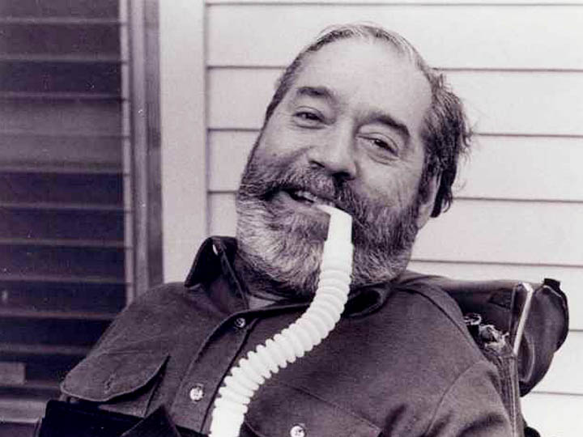

Thomas Hopkins Gallaudet
1787 - 1851
 Thomas Hopkins Gallaudet became interested in education for deaf and hard of hearing students after he graduated from Yale in 1805. Gallaudet studied sign language methods in France. Upon returning to the U.S., he established the American School for the Deaf in Hartford, Connecticut.
Thomas Hopkins Gallaudet became interested in education for deaf and hard of hearing students after he graduated from Yale in 1805. Gallaudet studied sign language methods in France. Upon returning to the U.S., he established the American School for the Deaf in Hartford, Connecticut.
Helen Keller
1880 - 1968

Helen Keller lost her vision and hearing during childhood. Keller learned to read and write from her teacher Annie Sullivan, and went on to become the first deafblind person to earn a Bachelors degree. Keller worked for the American Foundation for the Blind and was an advocate for disability rights, labor rights, and women’s suffrage.
Edward Verne Roberts
1939-1995
Edward Verne Roberts contracted polio when he was 14 years old. As a result, he had respiratory atrophy and slept in an iron lung at night.
Roberts attended the University of California Berkeley, where he earned a bachelor’s and master’s degree in political science. Roberts then went on to teach political science at his alma mater for six years.
In 1972, Roberts co-founded the Berkeley Center for Independent Living with John Hessler. The Berkeley Center for Independent living focused on advocacy by and for those with disabilities.
In 1984, Roberts was awarded a MacArthur Foundation “Genius” grant. Roberts used the grant to establish the World Institute on Disability, which advocates for those with disabilities.
Judith Heumann
1947 -

Judith Heumann contracted polio as an infant and as a result uses a wheelchair. In 1969, Heumann was denied a teaching license because the New York school board didn’t believe she’d be able to escort students out of a school building in case of a fire. Heumann sued the school board and won.
In 1970, Heumann founded Disabled in Action, which fought for protections for those with disabilities. Heumann also served as director of the Center for Independent Living in Berkeley, California and co-founded the World Institute on Disability with Edward Verne Roberts and Joan Leon.
Heumann advised the U.S. State Department on disability rights from 2010-2016 and continues her advocacy work to this day.
Leroy F. Moore Jr.
1967 -

Leroy F Moore Jr. is a co-founder of Krip Hop, a movement that focuses on hip hop arrangements created by artists with disabilities. Moore has also written about disability rights issues and remained active in his advocacy for art created by those with disabilities.
Haben Girma
1988 -
Haben Girma is the first deafblind graduate of Harvard Law School. After earning her J.D., Girma has practiced in the area of disability law, working for the National Federation of the Blind and other disability rights organizations. In 2015, Girma discussed accessibility technology with President Barack Obama at the White House.
Mama Cax
1989 - 2019
Mama Cax was an advocate for those with disabilities and a fashion model. As a teenager, Mama Cax had a hip replacement after undergoing treatment for bone and lung cancer. However, the hip replacement did not go well and her right leg was amputated. As a result, Mama Cax uses a prosthetic leg.
In 2017, Mama Cax began her first advertising campaign and later worked for Tommy Hilfiger and Sephora. Mama Cax displayed her prosthetic leg while modeling, which pushed the boundaries of the fashion industry. She also shared her experiences through blogging, hoping to bring visibility to the narratives of those with disabilities.
Annie Segarra
1990 -

Annie Segarra is a YouTuber and a disability rights and LGBTQ+ activist. Segarra was diagnosed with a connective tissue disorder when she was 26, and she began to use a wheelchair. Segarra discussed her experiences with her disability on her YouTube channel and has spoken out about disability rights issues.
Lydia Brown
1993 -
Lydia Brown is an activist who focuses on rights for autistic individuals. Brown is also an attorney, and their work has focused on promoting public policy that centers the needs of those with developmental disabilities. In 2013, they were honored at the White House for their advocacy.